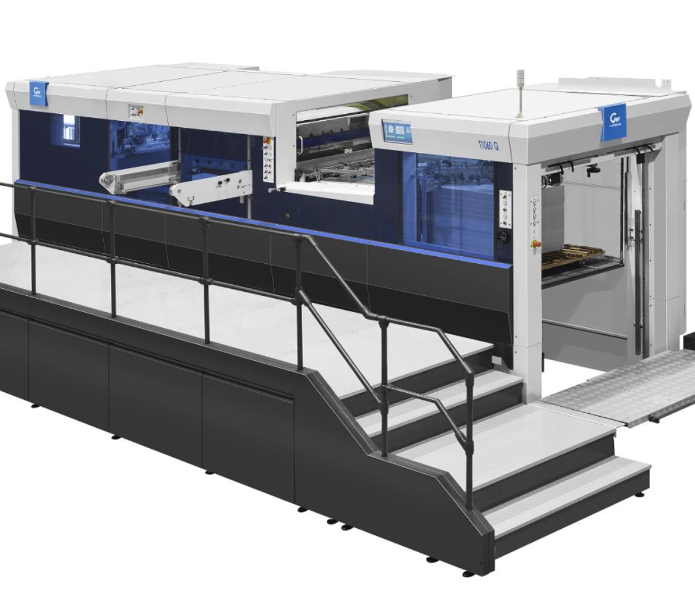
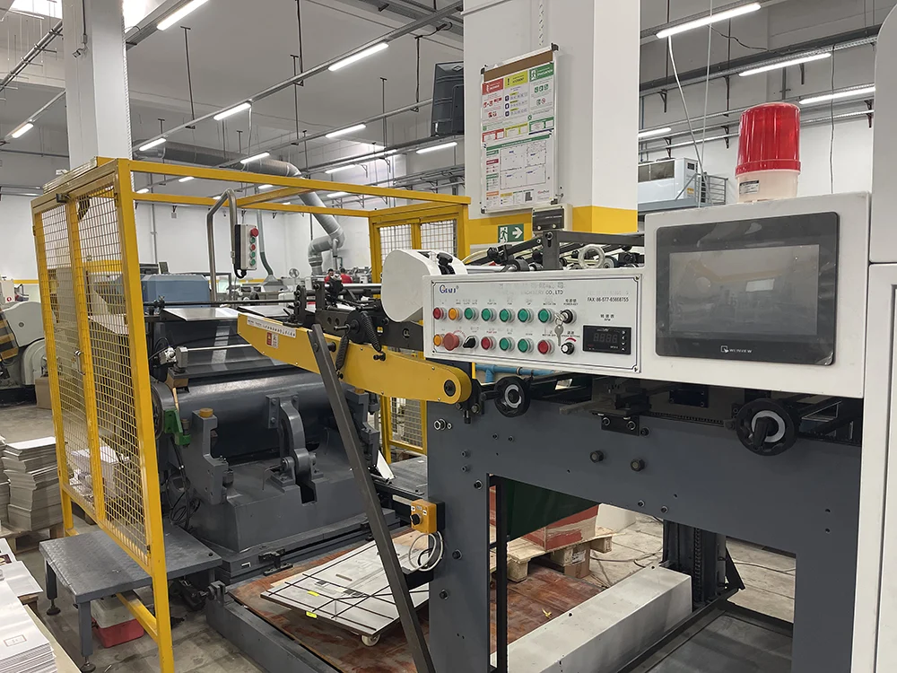

Découpe Cylindre
La découpe sur cylindre Heidelberg impressionne toujours les visiteurs. Ces machines plutôt anciennes produisent des résultats de grande qualité, mais restent limitées lorsqu'il s'agit de grands volumes.

Découpe platine
La production d'emballages nécessite des systèmes de découpe robustes, avec un repérage de très haut niveau et des automatismes performants pour l'éjection des déchets. Nous utilisons cette technologie pour les gros volumes.

Découpe Portefeuille
la découpe portefeuille offre une alternative productive pour les découpes de cartons canelés et les forts grammages .